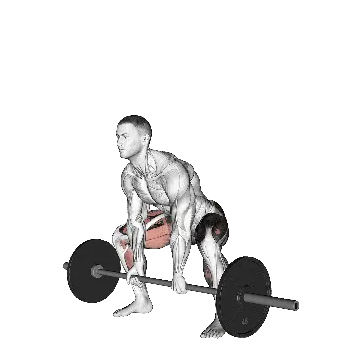

Sumo deadlift
Sumo deadlift menampilkan berat rata-rata dan standar kekuatan sebagai referensi untuk kategori seluruh tubuh. Otot utama: Gluteus maximus, Hamstring.

Berat rata-rata: Menengah
Acuan untuk level menengah.
Pria
363 lb
Wanita
205 lb
Berat rata-rata Sumo deadlift [1RM]
| Level | ||
|---|---|---|
| Dasar | 192 lb | 105 lb |
| Pemula | 269 lb | 150 lb |
| Menengah | 363 lb | 205 lb |
| Mahir | 471 lb | 269 lb |
| Pro | 587 lb | 339 lb |
Catatan: standar ini adalah estimasi 1RM berdasarkan lifter rata-rata. Berat badan, usia, dan faktor pribadi lain dapat memengaruhi hasil. Lihat data detail pada tabel di bawah.
Standar kekuatan Sumo deadlift (lb)
Pria berdasarkan berat badan (lb) [1RM]
| Berat badan | Dasar | Pemula | Menengah | Mahir | Pro |
|---|---|---|---|---|---|
| 110 | 113 | 166 | 232 | 309 | 392 |
| 120 | 130 | 186 | 255 | 336 | 423 |
| 130 | 146 | 205 | 278 | 362 | 452 |
| 140 | 162 | 224 | 300 | 387 | 480 |
| 150 | 178 | 243 | 321 | 411 | 507 |
| 160 | 193 | 260 | 342 | 434 | 532 |
| 170 | 208 | 278 | 361 | 456 | 557 |
| 180 | 223 | 295 | 381 | 478 | 580 |
| 190 | 237 | 311 | 399 | 498 | 603 |
| 200 | 251 | 327 | 417 | 519 | 625 |
| 210 | 264 | 342 | 435 | 538 | 647 |
| 220 | 278 | 357 | 452 | 557 | 668 |
| 230 | 291 | 372 | 468 | 575 | 688 |
| 240 | 304 | 387 | 484 | 593 | 707 |
| 250 | 316 | 401 | 500 | 611 | 726 |
| 260 | 328 | 415 | 516 | 628 | 745 |
| 270 | 340 | 428 | 531 | 644 | 763 |
| 280 | 352 | 441 | 545 | 660 | 780 |
| 290 | 364 | 454 | 560 | 676 | 798 |
| 300 | 375 | 467 | 574 | 692 | 814 |
| 310 | 386 | 479 | 587 | 707 | 831 |
Pria berdasarkan usia [1RM]
| Usia | Dasar | Pemula | Menengah | Mahir | Pro |
|---|---|---|---|---|---|
| 15 | 164 | 229 | 309 | 401 | 500 |
| 20 | 187 | 262 | 354 | 459 | 572 |
| 25 | 192 | 269 | 363 | 471 | 587 |
| 30 | 192 | 269 | 363 | 471 | 587 |
| 35 | 192 | 269 | 363 | 471 | 587 |
| 40 | 192 | 269 | 363 | 471 | 587 |
| 45 | 182 | 255 | 344 | 447 | 557 |
| 50 | 171 | 240 | 323 | 419 | 523 |
| 55 | 158 | 222 | 299 | 388 | 484 |
| 60 | 145 | 202 | 273 | 354 | 442 |
| 65 | 131 | 183 | 247 | 320 | 399 |
| 70 | 117 | 164 | 221 | 287 | 358 |
| 75 | 105 | 147 | 198 | 257 | 320 |
| 80 | 94 | 131 | 177 | 230 | 286 |
| 85 | 84 | 117 | 159 | 206 | 257 |
| 90 | 76 | 106 | 143 | 185 | 231 |
Wanita berdasarkan berat badan (lb) [1RM]
| Berat badan | Dasar | Pemula | Menengah | Mahir | Pro |
|---|---|---|---|---|---|
| 90 | 80 | 119 | 167 | 224 | 286 |
| 100 | 87 | 126 | 176 | 234 | 297 |
| 110 | 93 | 134 | 185 | 244 | 308 |
| 120 | 98 | 140 | 192 | 253 | 318 |
| 130 | 103 | 146 | 200 | 261 | 328 |
| 140 | 108 | 152 | 207 | 269 | 336 |
| 150 | 113 | 158 | 213 | 277 | 345 |
| 160 | 118 | 163 | 219 | 284 | 353 |
| 170 | 122 | 168 | 225 | 290 | 360 |
| 180 | 126 | 173 | 231 | 297 | 367 |
| 190 | 130 | 178 | 236 | 303 | 374 |
| 200 | 134 | 183 | 241 | 309 | 381 |
| 210 | 138 | 187 | 246 | 314 | 387 |
| 220 | 141 | 191 | 251 | 320 | 393 |
| 230 | 145 | 195 | 256 | 325 | 399 |
| 240 | 148 | 199 | 260 | 330 | 404 |
| 250 | 151 | 203 | 265 | 335 | 410 |
| 260 | 154 | 206 | 269 | 340 | 415 |
Wanita berdasarkan usia [1RM]
| Usia | Dasar | Pemula | Menengah | Mahir | Pro |
|---|---|---|---|---|---|
| 15 | 89 | 128 | 175 | 229 | 288 |
| 20 | 102 | 146 | 200 | 262 | 330 |
| 25 | 105 | 150 | 205 | 269 | 339 |
| 30 | 105 | 150 | 205 | 269 | 339 |
| 35 | 105 | 150 | 205 | 269 | 339 |
| 40 | 105 | 150 | 205 | 269 | 339 |
| 45 | 100 | 142 | 195 | 255 | 321 |
| 50 | 93 | 133 | 183 | 240 | 302 |
| 55 | 86 | 123 | 169 | 222 | 279 |
| 60 | 79 | 113 | 154 | 202 | 255 |
| 65 | 71 | 102 | 139 | 183 | 230 |
| 70 | 64 | 91 | 125 | 164 | 206 |
| 75 | 57 | 82 | 112 | 147 | 185 |
| 80 | 51 | 73 | 100 | 131 | 165 |
| 85 | 46 | 65 | 90 | 118 | 148 |
| 90 | 41 | 59 | 81 | 106 | 133 |
Catatan: barbell standar di gym umumnya berbobot 44 lb.
Catat dan analisis di aplikasi Shiba
Lihat beban, repetisi, dan perkembangan di satu tempat.
Cara membaca tabel
| Level | Deskripsi | Distribusi |
|---|---|---|
| Dasar | Menguasai teknik yang benar dan berlatih konsisten minimal 1 bulan. | Bawah 5% |
| Pemula | Berlatih konsisten minimal 6 bulan. | Atas 80% |
| Menengah | Berlatih konsisten lebih dari 2 tahun. | Atas 50% |
| Mahir | Berlatih terencana lebih dari 5 tahun. | Atas 20% |
| Pro | Menekuni latihan ini secara khusus lebih dari 5 tahun. | Atas 5% |
Latihan lainnya
Seluruh tubuh
Clean and jerk
Seluruh tubuh
Snatch
Seluruh tubuh
Clean
Seluruh tubuh
Clean and press
Seluruh tubuh
Rack pull
Seluruh tubuh
Dumbbell Romanian deadlift
Seluruh tubuh / Dumbbell
Hang clean
Seluruh tubuh
Stiff-leg deadlift
Seluruh tubuh
Muscle-up
Seluruh tubuh / Bodyweight
Power snatch
Seluruh tubuh
Thruster
Seluruh tubuh
Push jerk
Seluruh tubuh